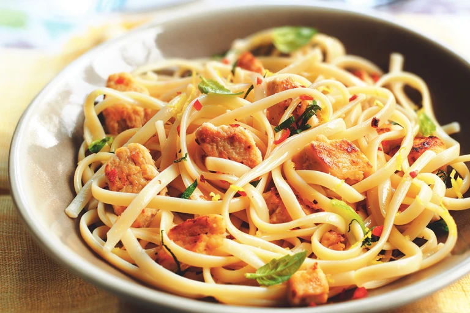

Linguine

What is Linguine?
Linguine is a type of Italian pasta similar to fettuccine and trenette but elliptical in section rather than flat. It is about 4 millimetres in width, which is wider than spaghetti but not as wide as fettuccine.
The name linguine means "little tongues" in Italian, where it is a plural of the feminine linguina.
Ingredients
- 175g linguine
- 2 tsp olive oil
- 1 garlic clove, finely sliced
- 100ml white wine
- 2 tbsp reduced-fat crème fraîche
- juice ½ lemon (or to taste)
- 2 handfuls (150g) raw peeled prawns
- small bunch chives, finely chopped
Steps
- Cook the pasta. Meanwhile, heat the oil in a pan and gently fry the garlic for 2 mins.
- Tip in the wine and bubble over a high heat for 1 min, then lower the heat and stir in the crème fraîche and lemon juice.
- Season to taste with salt and plenty of black pepper. Simmer for 1 min to reduce a little, then add the prawns and simmer in the sauce until just pink.
- Drain the pasta and tip into the sauce with half the chives. Use tongs to mix everything together.
- Divide between 2 shallow bowls and sprinkle with the remaining chives.